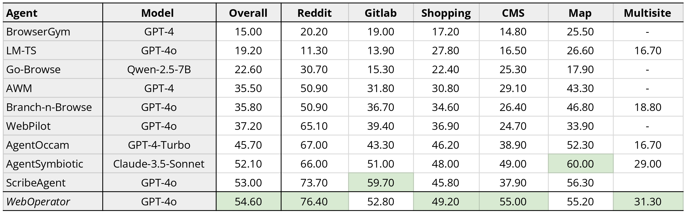

WebOperator
Action-Aware Tree Search for Autonomous Agents in Web Environment
Mahir Labib Dihan 1 *, Tanzima Hashem 1, Mohammed Eunus Ali 2, Md Rizwan Parvez 3
1
Department of Computer Science and Engineering
Bangladesh University of Engineering and Technology (BUET)
2 Faculty of Information Technology, Monash University
3 Qatar Computing Research Institute (QCRI)
*
Work done when working as a remote RA at QCRI. Paper Code Leaderboard
Overview of WebOperator, a tree-search framework for solving web tasks. The workflow iteratively explores the web environment via a structured tree: it (1) initializes at the start page, (2) observes and encodes the current page state as a node in the search tree, (3) adapts action space using the current observation, and expands the node by generating candidate actions using varied contextual formulations, and these actions are validated through rule-based analysis and simple URL-existence checks; (4) evaluates actions with a reward model, (5) merges duplicate or equivalent actions, (6) updates the search tree, (7) selects the best unexecuted action using action-aware criteria, (8) restores the target state using speculative backtracking, (9) executes the selected action, and (10) repeats until a terminating action produces a complete solution trajectory. The left panel shows an example thought-action sequence produced during task execution, and the right panel details the speculative backtracking mechanism.
Introduction
LLM-based agents often operate in a greedy, step-by-step manner, selecting actions solely based on the current observation without considering long-term consequences or alternative paths. This lack of foresight is particularly problematic in web environments, which are only partially observable—limited to browser-visible content such as the current page's DOM and UI elements—where a single misstep often requires complex and brittle navigation to undo. Without an explicit backtracking mechanism, agents struggle to correct errors or systematically explore alternative paths. Tree-search methods provide a principled framework for such structured exploration, but existing approaches lack mechanisms for safe backtracking, making them prone to unintended side effects. They also assume that all actions are reversible, ignoring the presence of irreversible actions—limitations that reduce their effectiveness in realistic web tasks. To address these challenges, we introduce WebOperator, a tree-search framework that enables reliable backtracking and strategic exploration. Our method incorporates a best-first search strategy that ranks actions by both reward estimates and safety considerations, along with a robust backtracking mechanism that verifies the feasibility of previously visited paths before replaying them, preventing unintended side effects. To further guide exploration, WebOperator generates action candidates from multiple, varied reasoning contexts to ensure diverse and robust exploration, and subsequently curates a high-quality action set by filtering out invalid actions pre-execution and merging semantically equivalent ones. Experimental results on WebArena and WebVoyager demonstrate the effectiveness of WebOperator. Notably, on WebArena, WebOperator achieves state-of-the-art performance with gpt-4o, achieving a 54.6% success rate, underscoring the critical advantage of integrating strategic foresight with safe execution.
WebOperator Overview
We introduce WebOperator, which redefines web environments by extending the notions of state (temporary and persistent) and actions (safe and destructive). It develops an action-aware tree-search approach that incorporates: (a) Dynamic adaptation of the action space at each step based on the current observation, along with validation of generated actions to reject those that are invalid or have no meaningful effect. (b) Variation of the LLM input context to generate diverse candidate actions, combined with consolidation of redundant actions to ensure meaningful exploration. (c) Reliable backtracking using speculative execution and snapshot validation, allowing previously executed actions to be replayed or aborted without corrupting the main environment. (d) Pre- and post-execution heuristics to identify potentially destructive actions based solely on observable content. (e) Efficient traversal via a best-first search strategy that prioritizes safe, reversible actions early and defers destructive actions, replacing costly random-rollout methods like MCTS.Together, these contributions enable WebOperator to systematically explore web environments, safely handle both temporary and persistent state changes, and operate efficiently under uncertainty, advancing the capabilities of tree search for realistic web automation tasks. Through comprehensive experiments on two dynamic, real-world web benchmarks, WebArena and WebVoyager, we demonstrate the effectiveness of WebOperator. Our ablation studies and analyses further provide deeper insights into WebOperator's capabilities and limitations.
Results
Table 1: Success rate (SR %) comparison on WebArena.
Example Tree Search

Cite Us
@inproceedings{
dihan2025weboperator,
title={WebOperator: Action-Aware Tree Search for Autonomous Agents in Web Environment},
author={Mahir Labib Dihan and Tanzima Hashem and Mohammed Eunus Ali and Md Rizwan Parvez},
booktitle={Submitted to The Fourteenth International Conference on Learning Representations},
year={2025},
url={https://openreview.net/forum?id=vnEuxLVFmN},
note={under review}
}